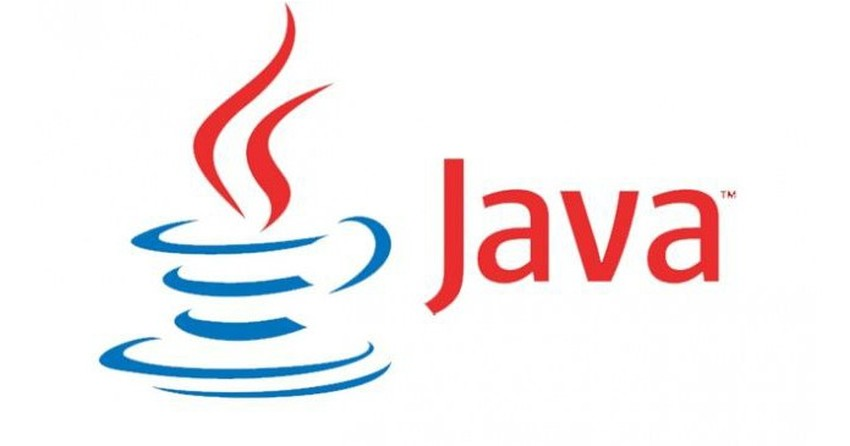

Como o nome sugere, o desenvolvedor back-end trabalha na parte de “trás” da aplicação. Ele é o responsável, em termos gerais, pela implementação da regra de negócio. Em resumo o desenvolvedor back-end é responsável pela implementação das funcionalidades de um site(ex: cadastros, logins, recuperação de senha, etc...)
Introdução
Em uma aplicação web, este desenvolvedor, quando focado, não toca na parte visual da aplicação. Por lidar com a regra de negócio, as vezes um programador de sistemas, como de aplicações comerciais e até científicas, pode ser chamado de desenvolvedor back-end. E geralmente, nessas aplicações, este desenvolvedor trabalha um pouco com a parte visual. Por isso, para este artigo, o desenvolvedor back-end levado em conta, é o desenvolvedor de aplicações web.
Quando falamos de back-end em desenvolvimento web, nos deparamos com várias linguagens, como Go, Clojure, C#, PHP, Java, Python, Ruby, entre outras. Cada uma possui vantagens e desvantagens em relação ao uso no desenvolvimento web, bem como no mercado de trabalho.
Algumas linguagens são mais atuais e com poucos profissionais no mercado. Desta forma, há uma grande demanda por elas (ex: Go e Clojure). Outras são mais tradicionais, fazem parte de um mercado já consolidado e possuem uma grande gama de material de estudo (ex: C#, PHP, Java e Ruby).
Para quem está iniciando, é recomendável focar nas linguagens mais tradicionais, pois o aprendizado será mais completo, dado o número extenso de materiais disponíveis. Isso também facilitará o posicionamento no mercado de trabalho, já que essas linguagens possuem mais oportunidades de emprego disponíveis.
Para que o aprendizado em back-end seja ainda mais completo, é preciso ter conhecimento em banco de dados (ex: MySQL, SQL Server, PostgreSQL, entre outros). Normalmente o banco de dados é escolhido com base no que possuir mais recursos disponíveis na linguagem que será utilizada na aplicação.
Principais linguagens Back-end do mercado
Java

Java é o nome dado ao ambiente computacional, ou plataforma, criada pela empresa estadunidense Sun Microsystems, e vendida para a Oracle depois de alguns anos. A plataforma permite aos usuário o desenvolvimento de sistemas Desktop, Mobile e Web.
Python
Python é uma linguagem de programação de alto nível, interpretada, de script, imperativa, orientada a objetos, funcional, de tipagem dinâmica e forte. Apesar de ser uma linguagem muito utilizada nos dados ela também permite aos usuários desenvolverem sistemas Desktop, Mobile e Web.
C#
C# é uma linguagem de programação, multiparadigma, de tipagem forte, desenvolvida pela Microsoft como parte da plataforma .NET. A sua sintaxe orientada a objetos foi baseada no C++ mas inclui muitas influências de outras linguagens de programação, como Object Pascal e, principalmente, Java. É extremante conhecida em desenvolvimento Desktop e WEB, através do framework ASP .NET
NodeJS
Node.js é um interpretador de JavaScript assíncrono com código aberto orientado a eventos, criado por Ryan Dahl em 2009, focado em migrar a programação do Javascript do cliente para os servidores
Conclusão
Existe diversas oportunidades para desenvolvedores Back-end no mercado porém para aproveitar as melhores o conhecimento somente de Back-end não será o 100%, o profissional precisa ser completo, isto é conhecer o front-end também e não se limitar a uma linguagem